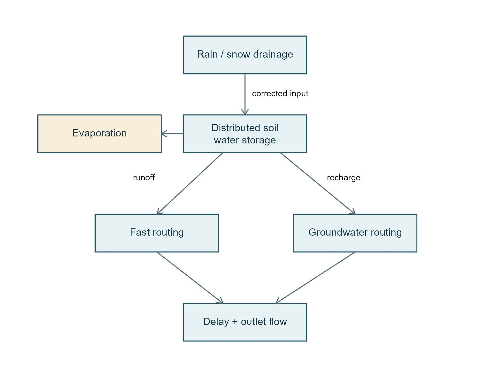
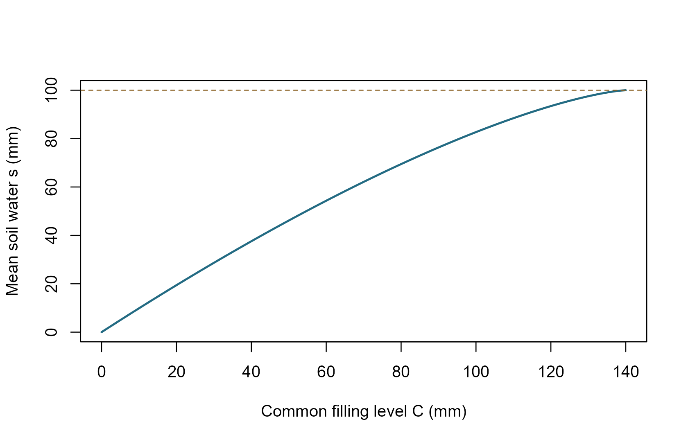

PDM explained: from rainfall to river flow
pdmS7 documentation
pdm-explained.RmdThe idea in plain English
PDM treats a catchment as many small soil stores with different capacities. Shallow stores fill first. As rain continues, more of the catchment becomes saturated and produces runoff. The model then delays that water through fast and slow routing stores before reporting river flow.
It does not map individual fields or hillslopes. A probability distribution describes how storage capacity varies across the catchment. The S7 components let you exchange that distribution, the recharge rule and the routing rule without rewriting the simulation.

Default pathway: soil runoff feeds fast routing; recharge feeds groundwater. Split recharge instead divides runoff between both paths.
Units and symbols
| Symbol | Meaning | Unit |
|---|---|---|
| , , , | Rain, actual evaporation, recharge and runoff depths per interval | mm |
| Catchment-average soil water | mm | |
| A local store’s capacity | mm | |
| Common filling level used by the capacity distribution | mm | |
| Fraction of catchment with capacity no greater than | fraction | |
| , , | Routing storage, inflow rate and outflow rate | mm; mm/h; mm/h |
| Model interval | hours internally | |
| Catchment area | km² |
sim_pdm() takes integer minutes, while
component functions take hours. Rain and PET are interval totals, not
mm/hour rates. qsim_cms is an interval average in m³/s;
qsim_end_cms is flow at the interval end. Use the series
that matches the observations. A factor or coefficient calibrated hourly
is not automatically a daily coefficient.
1. How the soil distribution works
For a filling level , the mean water stored across the catchment is
In words: integrate the fraction of stores that can still hold water
at each depth. capacity_mean() returns
,
not the largest local capacity.
storage_from_capacity() evaluates
;
capacity_from_storage() reverses it.
capacity_cdf() returns
,
the saturated area fraction.
Five configurable capacity families
Outside bounded supports, CDFs are zero below the lower limit and one above the upper limit. Let , and .
| Family / configuration type | CDF inside its support | Mean capacity |
|---|---|---|
Pareto / pareto
|
||
Rectangular / rectangular
|
||
Symmetric triangular / triangular
|
below midpoint; above | |
Exponential / exponential
|
for | |
Lognormal / lognormal
|
for |
is the standard normal CDF. Pareto with b=0 is a point mass
at cmax, not an ordinary density;
capacity_pdf() deliberately rejects that case. Infinite
filling level is a valid saturated limit for unbounded families. The
implementation corrects apparent normalization/printing errors in the
paper’s Appendix A; see docs/source-notes.md in the full
project.
soil <- FlodeParetoCapacity(cmin = 0, cmax = 140, b = 0.4)
capacity_mean(soil) # 100 mm, not 140 mm
#> [1] 100
storage_from_capacity(soil, c(0, 50, 100, 140))
#> [1] 0.00000 46.12835 82.68969 100.00000
For the example Pareto distribution, mean soil storage grows more slowly than the common filling level as more stores saturate.
2. Evaporation, recharge and runoff
Rain is first multiplied by fc. With current soil
storage
and PET depth
,
the requested actual evaporation is
Wet soil supplies more of the potential demand. Requests are evaluated at the start of the interval. To prevent overdrawing the store, this implementation allocates available water to evaporation first and recharge second:
The remaining net depth is . When :
Whatever cannot increase storage becomes runoff. For
,
storage decreases and runoff is zero. The complete model’s
water-limiting rules prevent negative storage; standalone
soil_step() clips a requested excessive deficit at zero, so
do not interpret an impossible standalone withdrawal as an actual
flux.
soil_step(soil, storage = 50, net_depth = 20)
#> $storage
#> [1] 65.59771
#>
#> $runoff
#> [1] 4.402291Three recharge choices
Standard: water drains only above threshold :
kg has units consistent with the exponent:
h·mm,
not always hours.
Demand: groundwater deficit controls soil drainage.
Let
be the groundwater storage giving qsat, and clip
to [0,1]. Then, with
,
This is an interval-depth rule: it is timestep-sensitive and requires . It also requires a single groundwater store with a positive implied ; it cannot use the two-store cascade.
Split: no separate soil drainage. Divide generated runoff into fast and slow inputs. This changes the diagram’s connections, not just a coefficient in the standard drainage equation.
3. Routing and the reported discharge
Routing answers “when does generated water reach the outlet?”
| Routing option | Flow law / structure | Main configuration |
|---|---|---|
| Linear | linear(kb) |
|
| Quadratic | quadratic(kb) |
|
| Cubic | cubic(kb, solver) |
|
| General power | power(k, m, solver, rtol, atol) |
|
| Cascade | ; | cascade(k1, k2) |
| Exponential | exponential(a, gamma) |
Here the notation linear(kb) denotes a configuration
choice, not an R function call; the constructor is
linear_routing(kb). The exponential model’s
is a signed log-storage coordinate, not an ordinary
nonnegative tank. Power routing uses exact solutions where available and
adaptive integration otherwise; the cubic smith option
reproduces the report’s approximate recurrence.
route_step() returns a new state, discharged depth and both
mean and endpoint rates. Inputs are treated as constant rates during
each routing interval.
After a common outlet delay td, conversion to m³/s
is
Fractional delays split water conservatively between neighbouring
intervals. Delay queues are part of the stored restart state.
qc is an external signed outlet adjustment, not a
withdrawal from the model stores.
Function map and a short run
| Task | Public functions |
|---|---|
| Configure |
pdm_presets(), parameter_catalog(),
read_pdm_config(), load_pdm_model(),
pdm_from_config(), pdm_model()
|
| Inspect soil |
capacity_cdf(), capacity_pdf(),
capacity_mean(), storage_from_capacity(),
capacity_from_storage(), soil_step()
|
| Inspect pathways |
recharge_depth(), routing_flow(),
storage_for_flow(), route_step(),
transfer_coefficients()
|
| Run and restart |
initial_state(), pdm_step(),
run_pdm(), sim_pdm(),
spin_up()
|
| Fit and evaluate |
calibrate_pdm(), calibrate_pdm_multi(),
pdm_objectives(), pareto_front()
|
| Existing updating |
state_updater(), correct_state(),
error_updater(), fit_error_updater(),
update_forecast()
|
config <- pdm_presets("standard")
config$area_km2 <- 44
flow <- sim_pdm(c(0, 10, 5, 0), rep(0.05, 4), config, timestep_min = 60L)
flow[, c("qsim_cms", "soil_moisture_mm", "balance_error_mm"), with = FALSE]
#> qsim_cms soil_moisture_mm balance_error_mm
#> <num> <num> <num>
#> 1: 0.002762403 47.89167 7.105427e-15
#> 2: 0.352909552 54.39355 0.000000e+00
#> 3: 1.776898979 56.54137 1.421085e-14
#> 4: 3.198890757 54.15721 0.000000e+00
attr(flow, "water_balance")
#> residual_mm max_abs_step_mm
#> 2.131628e-14 1.421085e-14Presets other than identified paper examples are illustrative, not
calibrated catchments. sim_pdm() initializes half-full soil
by default; explicit states or an adequate spin-up period may be needed.
spin_up() repeats forcing; it does not automatically prove
convergence. Do not change structure/timestep while reusing a
checkpoint.
The existing updating functions alter model states or forecast errors; state correction needs zero outlet delay and reports added/removed water. They are not a river-network or ensemble-assimilation system. Those extensions remain future work.
What the balance check does, and does not, prove
The per-step residual is
“Storage” includes soil, routing states and water in delay queues. A near-zero residual checks accounting. It does not establish good forecasts, correct forcing, a calibrated parameter set, or operational approval.
Source
Moore, R. J. (2007), The PDM rainfall-runoff model, HESS 11, 483–499, doi:10.5194/hess-11-483-2007. Equations above describe this library’s implementation; its source notes identify the Appendix A corrections and additional numerical conventions.